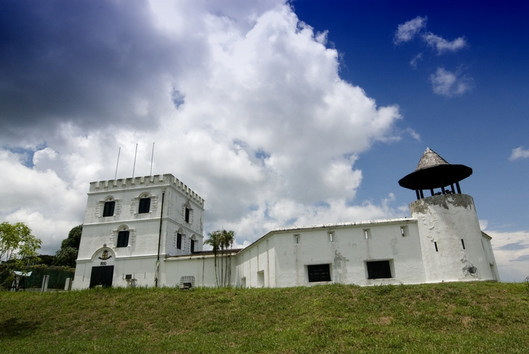
MARGHERITA 瑪格烈達城堡位於ASTANA附近，建於1879年。這座城堡亦是為CHARLES BROOKE的妻子RANEE MARGARET而建。 它佔據非常重要的地形，深具戰略地位，主要是為了抵禦外敵來侵略古晉城，特別是來自砂拉越河下游的敵人。這座城堡後來被翻修過，如今，它已被轉作一間警察博物館。
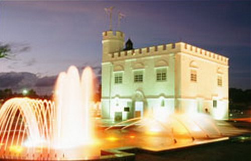
這座SQUARE TOWER非常類似英格蘭的古塔廣場。它原本的建造目的是當作扣留中心，廣場內還建造了扣押囚犯的地牢。 那座高塔是後來才建造的。在BROOKE統治時期，它亦被當作城堡及舞蹈大廳來使用。
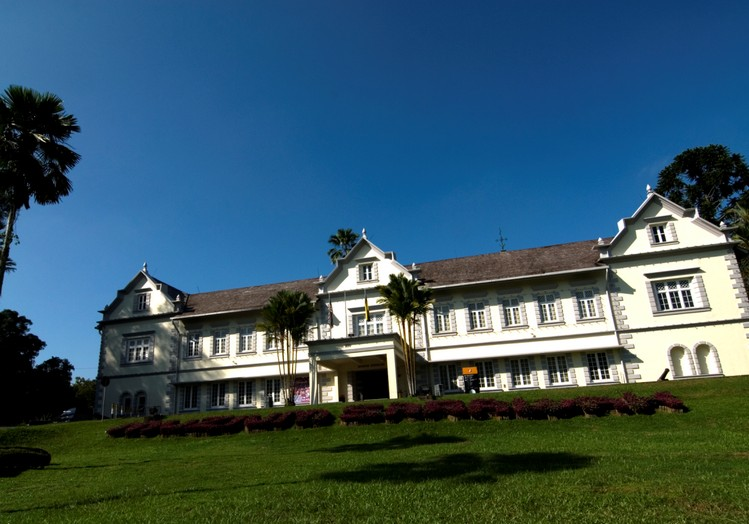
砂拉越博物館的內部構造，是取自諾曼底豪宅建築所啟發的靈感。它被稱許為亞洲最好的博物館之一。館內珍藏了婆羅洲各族群的人類學資料以及重要的考古文物資料等。 這裡永久性的展出土著原住民的藝術及手工藝品。此館的許多展示品是由ALFRED RUSSELL WALLACE所捐獻的。這位華勒斯先生是一位自然學家，它是和達爾文共同發現進化論的科學家之一。 華勒斯一生投注了相當多的時間在婆羅洲，他亦是BROOKE家族的好朋友。此博物館有座附屬建築物，裡頭收藏了華人的瓷器及一間畫廊，特別為紀念此處許多族群所擁有的不同生活方式而建的。 此館亦收藏有證據顯示，4萬年前尼亞洞穴NIAH CAVES曾經進行過一次重建工程，這可從洞穴所挖掘出的遺骸，獲得證明。
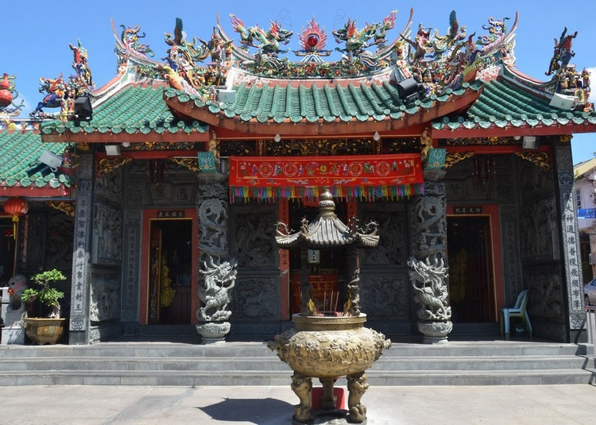
這座廟宇建於1895年，是為供奉KUEK SENG ONG 神而建的。興化HENGHUA漁民在出海捕魚之前，都會來此上香膜拜，希望能有大收穫，並且求神保佑平安歸來。 民間故事流傳這位郭姓漁民，原是中國福建省人，於一千年前轉變為神明，據說“祂”是有求必應的。
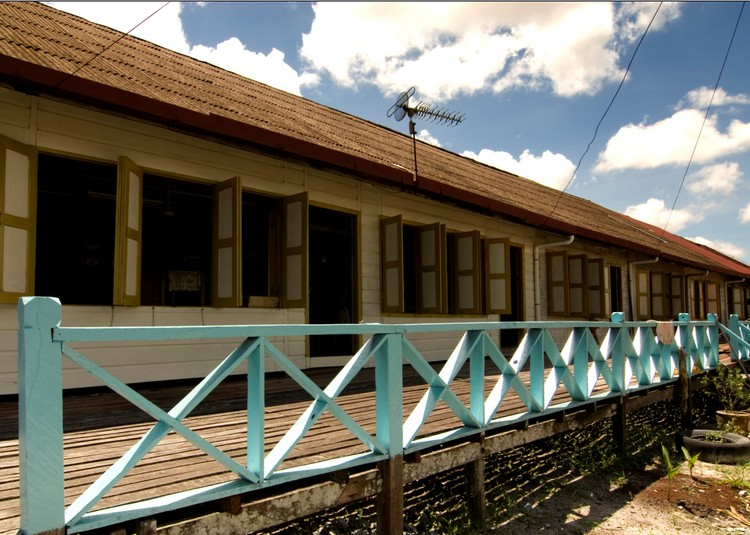 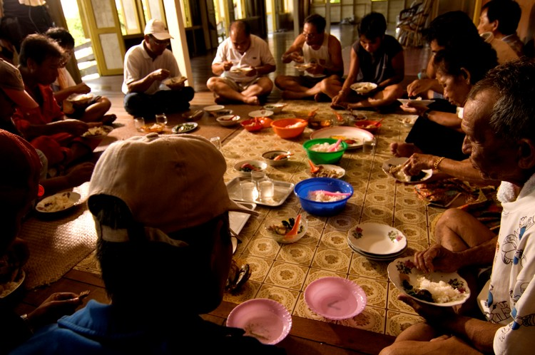 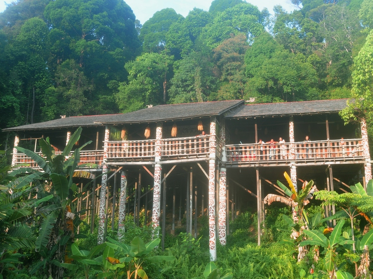
 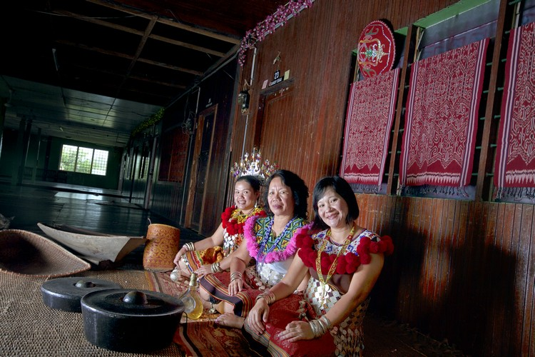
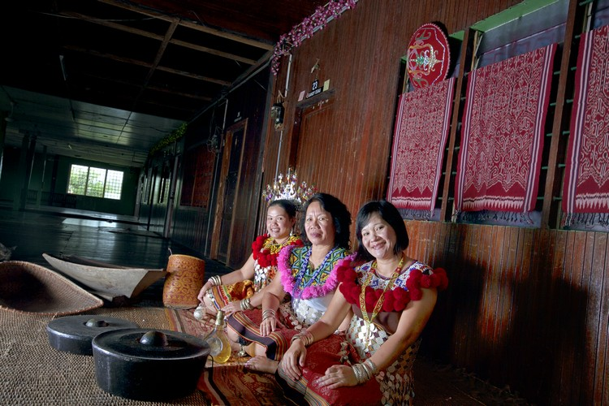
您決定到砂拉越旅遊時，請記得一定要去過長屋參觀，整個旅程才算完整。這裡有一個“長屋之旅”，首先是驅車4小時抵達SKRANG河河岸邊。從這裡沿著狹窄的SKRANG河而下，偶爾會碰到一些激流。 這趟沿著風景如畫的河邊景色之驚險旅程，將遊客帶到一系列伊班族的長屋上。這些長屋皆是採用鐵木牆板建造而成的。 長屋上隔了一間一間相鄰的房間，房間外頭有一個寬大的大廳，伊班族的休閒活動如：製作木雕、編織籃子等，皆在這個大廳裡完成。 所有在此居住的旅客，都會被邀請參加晚上的“歡迎儀式”，並且共飲伊班族特製的米酒，TUAK。伊班族是非常友善及熱情的民族。他們的客房都會弄得非常舒適，包您有賓至如歸之感。


SEMENGGOH野生動物復原中心距離古晉以南大約32公里，這裡專門收留受傷或被捕捉的“紅毛猩猩”ORANG UTAN，細心照顧它們。當它們完全康復之後，又將它們送返森林去。 此復原中心亦收留其他野生動物，如：猴子、熊及犀鳥等。通常這些動物是受遺棄，有些則是被一些人不合法擁有，最後都送到這裡來。 最佳觀賞時間是餵養它們的時刻，那就是早上8點半至早上9點，以及下午3點至下午3點15分。
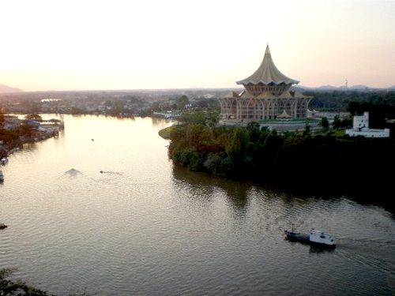

來到東馬婆羅州的遊客，絕對不能錯過古晉新興熱門的觀光景點─砂拉越新州立法議會大廈(The new State Legislative Assembly Complex)。這棟高達九層樓的新建築物，為古晉的天際線增添唯美風采，鑲金的屋頂在陽光照耀下，閃爍燦爛耀眼的光芒，在遠處欣賞這座古晉最新的地標，更具一番風味。新州立法議會大廈建築宏偉莊嚴，路過的旅人，無不駐足讚嘆。 來到新州立法議會大廈，必定要參觀建於1870年的砂拉越首長官邸Astana，這座城堡原是砂拉越第二代統治者送給愛妻─瑪格烈達的新婚禮物，所以也稱為瑪格烈達城堡(Fort MarGaretha)。 目前這棟浪漫唯美的歷史遺跡，也對外開放予一般遊客。 新州立法議會大廈建於山丘上，遙望砂拉越河畔。這座莊嚴的建築物，兼具了宴會、會議、儀式典禮等重要活動的功能。除了實用功能外，其造型特殊的美麗設計，更為古晉這座古城增添新意。
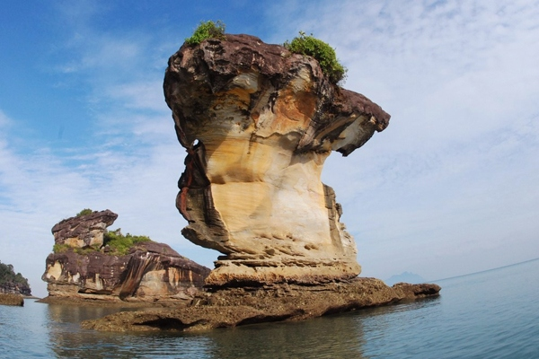
砂拉越最早期的國家公園落成於1957年，占地約 27 平方公里，距離古晉市約37公里。壯觀的自然景色、廣闊的動植物棲息地，還有豐富的野生動植物，都讓這裏聲名遠揚。 公園最主要的景觀在於其幽僻的峽灣和崎嶇的海岬，陡峭的岩壁遙望著浩瀚的南中國海。 大海的衝刷、浪潮和海風，在峭壁的腳下蝕刻出一處處雄奇的石拱和岩柱，一些奇特的造型猶如烏龍出洞。 粉紅的砂岩和鐵礦沉積物交疊堆砌，在崖壁上勾畫出迷人的圖案。往內陸，飛流的瀑布墜入清澈的潭中，嘩嘩水聲讓茂密的叢林更顯寧靜。 巴哥豐富多樣的植物群落和植被類型也是公園的景致之一。婆羅洲目前發現的植物，在巴哥幾乎都能找到。 巴哥還棲息著僅婆羅洲才有的 275 只珍稀象鼻猴。 清晨至黃昏之間野生動物最為活躍，因而是前往巴哥觀察它們的最佳時段。巴哥也是觀鳥的絕妙場所, 記錄在案的鳥類達 150 餘種。
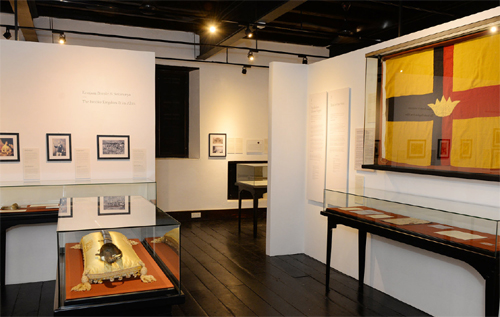 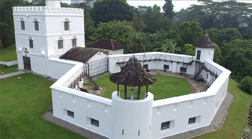 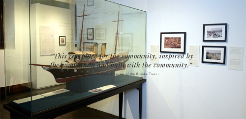
布魯克畫廊講述了歷史上最顯著的王國之一的故事：砂拉越和它的“White Rajahs”。 19世紀30年代，砂拉越曾經是一個位於婆羅洲西北部汶萊蘇丹國的省份，遭到了汶萊海盜的襲擊和統治叛亂的蹂躪。 受到其自然奇觀和多元土著文化的影響，1839年8月，一位英勇無畏的英國冒險家詹姆斯布魯克（James Brooke）以他的遊艇Royalist抵達了海岸。 他將與其人民建立獨特的紐帶，並共同建立基礎今日的砂拉越。 展覽側重於塑造國家的人員，地點和事件。他們帶我們走過了1841年9月開始的一個世紀“White Rajah”統治的旅程，在1941年12月被日本入侵破壞，並於1946年7月結束，砂拉越被吞併為英國殖民地。 隨後走向政治獨立的行動最終達到了高峰，在1963年9月砂拉越參與組建馬來西亞聯邦。
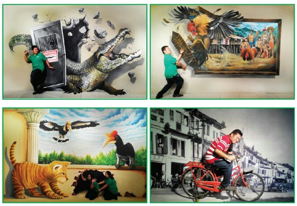
婆羅洲博物館是一個具有各種互動3D壁畫和教育性質的博物館，在古晉占地面積超過12,500平方英尺，趣味十足，歡迎參觀。 博物館內的互動3D壁畫展示了砂拉越的自然、文化、遺產、美食和生活。
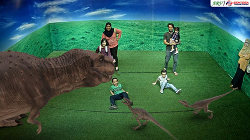 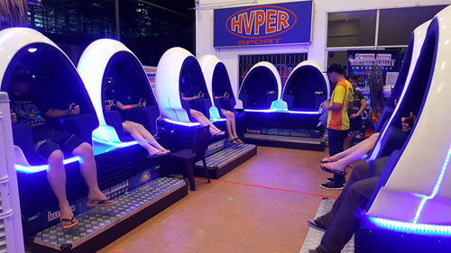 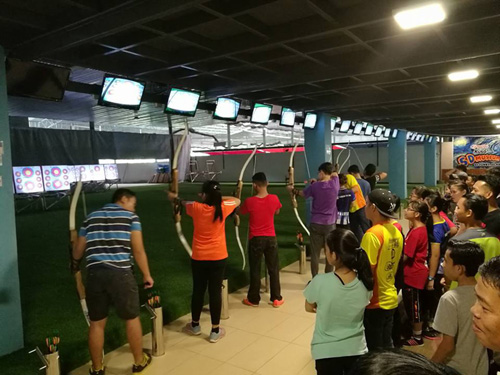 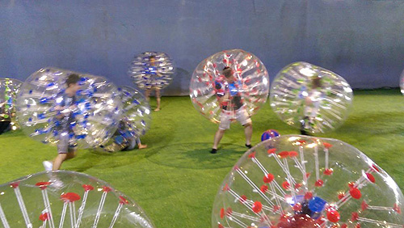
砂拉越聖淘沙主題公園是最大的室內主題公園，提供各種娛樂和休閒運動。主題公園內有17種玩樂區域，包括Kuso5D博物館、 Kuso虛擬實境體驗館、哈飛卡丁車、 漂流自行車、漂移車、迷你ATV、溜冰、直排輪、軟式飛鏢、泡泡球及射箭。 Kuso5D博物館共有40個5D背景，可供遊客選擇，包括魔鏡、幻想世界、竹橋、熱帶森林、浪漫房間和寶藏世界等各種主題。
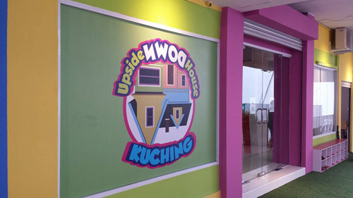 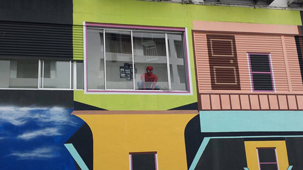 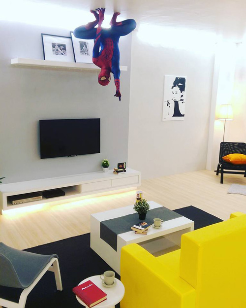
Upside Down House Kuching 是古晉首間成立的顛倒屋，從開幕至今已吸引全球各地的遊客前來一探究竟。
顛倒屋讓所有的遊客進入另一個顛覆視覺的空間，從裡到外翻轉你的世界，帶來全新刺激與無限的創意。
顛倒屋內有多種不同的空間包括書房、起居室、餐桌、廚房、臥室、兒童房、遊戲間、甚至是衛浴設備等，顛倒的設計巧思讓每一個遊客、家庭與攝影愛好者都留下各式各樣難忘的照片回憶。
古晉顛倒屋不僅是熱門的拍攝景點，更是符合親子、情侶及各個年齡層至古晉旅遊時，值得到訪的景點之一。
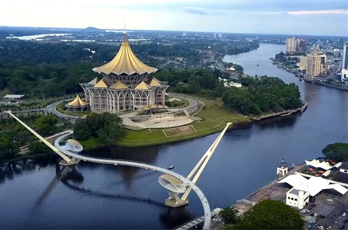 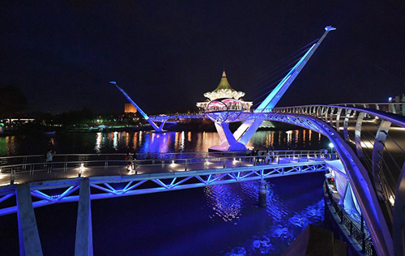
達魯哈納橋這座人行天橋的獨特設計與東南亞其他地區不同，也被稱作「S型黃金橋」，象徵著砂拉越州的團結，因為它橫跨連接了砂拉越河的兩岸，佇立在砂拉越新州立法議會大廈前。
達魯哈納橋便利了古晉南北兩岸人民的往來，是古晉砂拉越河市區內第一座也是唯一一座的人行天橋。
橋身設計構思巧妙，是以砂拉越的州鳥—犀鳥為原型所建造，設計師將兩隻犀鳥尾部交纏在一起的設計作為橋身，造型蜿蜒、線條優美。
橋身全部有彩燈裝飾，夜晚時刻會不斷變換顏色，在五彩繽紛的燈光照射下，屹立在砂拉越河上，十分醒目，也成為了砂拉越州古晉市的新旅遊景點。